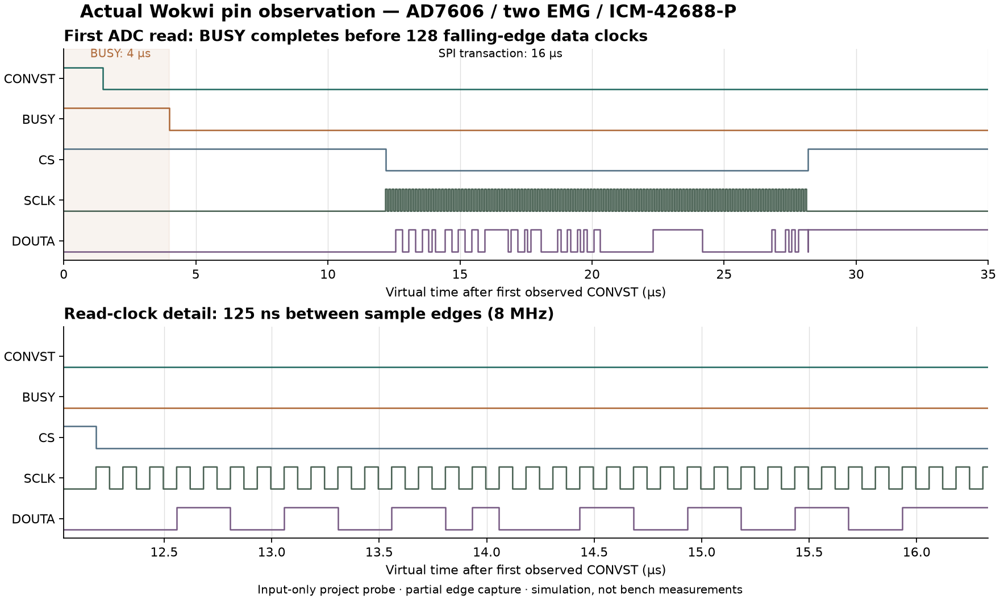

Digital timing, observed in Wokwi
Muttakin Rahman · AD7606 / two EMG / ICM-42688-P · 3 October 2026
The complete recorder now has a separate passing digital pin capture. An input-only virtual probe watched the running ESP-IDF firmware and the modeled ADC/IMU signals. Its 10,041 conversion triggers and 10,041 reads match the saved EMG frames exactly. The saved file, actual converter and live decoder also pass.
This check observes simulated digital behavior. Sensor physics, analog noise, real SDMMC/card operation, RF transport, power and battery runtime remain outside it.
Open the complete system · Download the timing scene · Inspect the result
What passed
| Check | Observed in the simulator | What it establishes |
|---|---|---|
| ADC conversion/read count | 10,041 / 10,041; no pending or partial read | Every observed nominal conversion has a completed read and saved EMG frame |
| ADC readout | 128 rising and 128 falling clocks per read; zero wrong-word frames | Correct simultaneous-frame serialization through DOUTA, including signed eight-word order |
| ADC clock | 125 ns between falling edges; 1,275,207 intervals checked | 8 MHz read clock within this virtual run |
| Trigger schedule | Mean 7,983.860 Hz; individual intervals 122.250–128.262 µs | Passes the modeled 8 kHz ±1% mean and 125 µs ±5 µs interval gates |
| CONVST / BUSY | CONVST high 1.483–1.484 µs; BUSY high 4.000 µs | Trigger pulse is long enough; all reads begin after the modeled conversion completes |
| IMU interrupts | Both every 5.000 ms, with 10.000 µs pulses; 252 / 252 in the ADC window | Two independent modeled 200 Hz interrupt streams |
| Saved output | 10,041 EMG, 263 foot and 252 shank records | Correct enabled channels, both sensor identities and no detected saved sequence gaps |
| Live output | Actual UDP decoder passes; one preview drop reported | Preview loss stays explicit while the saved stream remains complete |
The ADC model sends distinct test values on all eight words: 6554, 13107, -1234, 2345, -32768, 32767, 0, 1111. Only the first two are exported as EMG. The other six are synthetic channel-order checks, not valid muscle measurements.
Read the waveform

The plot uses actual observed pin transitions from the first ADC read. The full partial capture includes the first two complete reads and a leading BUSY edge before the next CONVST callback. The independent decoder reconstructs both signed eight-word frames from 611 recorded pin changes. A second set of snapshots identifies the last two reads; aggregate counters and decoding checks cover all 10,041 reads.
Edge CSV · Partial derived VCD · Original Chips Console · Export provenance
The partial VCD is derived from the pin observer; it is not a downloaded full-session Wokwi logic-analyzer file. Two attempts to obtain that browser download did not return a file. Their inputs and status remain in the evidence folder. Full-session native VCD qualification remains open.
Two details the capture clarified
Startup reads. There are two discarded SPI reads during RESET: one when adc_bus_init configures the converter and another when start_recording configures it for the session. Both precede the first conversion, and neither is counted as muscle data. The integrated checker now accounts for both. The separate one-shot diagnostic keeps its own startup expectation.
Clock idle state. The observer reports SCLK low at the CS assertion for all 10,043 transactions, including the two startup reads. This raw finding remains in the result as wrong_idle_clock; it has not been edited out. Active read clocks and falling-edge decoding pass. The Wokwi GPIO abstraction does not establish the physical controller's clock-idle polarity or setup/hold margins. Those checks remain pending on real hardware; this observation alone does not justify changing the physical design.
The recorder image, original sensor-model C files, PCB and other five configurations were preserved. The probe adds only input taps and a visible diagnostic label to a temporary copy of the complete scene.
Run the same check
- Open the saved complete recorder project and extract the timing download. The saved project contains the original full scene; the optional probe is supplied in the download.
- Use the editor file menu → Upload file(s)… for
probe.chip.candprobe.chip.jsoninintegrated-recorder/full-system/trace-validation/. - Replace the editor's
diagram.jsonwith the copy from that same folder. The instrumented scene has 38 parts and 89 connections. The probe is labeled INPUT-ONLY VIRTUAL PROBE. - Focus an editor, press F1 → Upload Firmware and Start Simulation…, and select the download's
integrated-recorder/firmware/merged.bin. Check ELF prefix aabb34031. This firmware is for simulation only. - Let Serial Monitor reach
INTEGRATED_COMPLETE,case=0and bothEXPORT_ENDmarkers. In Chips Console, scroll toPROBE_SUMMARY. Retain both original console texts.
Re-upload the custom image after reopening the page. A drawing saved in Wokwi does not guarantee persistence of an uploaded firmware image. The default placeholder sketch is not the recorder firmware.
How the result was checked
The strict assessor verifies the frozen 31-file recorder manifest, pre-run diagram copied from the visible editor, input-only probe source, uploaded image identity, complete file/UDP exports, saved counts and host decoding. It compares the probe's counts with the saved EMG count and independently decodes the first two reads from the captured data/clock edges.
The instrument itself passes 10 native test groups, including 12 injected fault variations. Short clocks, swapped words, missing BUSY, reading during BUSY, bad clock sequencing, priming/reset errors, slow timing, missing interrupts, partial captures and resumed conversions are rejected. Bad raw data cannot pass merely because a summary says it is good. Native fixture edges are synthetic instrument tests; they are kept separate from the actual browser capture.
Instrument test results · Probe manifest · Observation log · Bundle SHA-256 · Source and reproduction commands
Wokwi documents pin-change observation, virtual time in nanoseconds and custom-chip console output. The project-authored probe is tested independently, but an official simulator does not validate its models as physical devices.
The existing 18-case integrated fault matrix remains separate. Those cases used the smaller protocol fixture. This additional complete-scene pin capture covers the nominal case and does not turn the earlier fault diagrams into full-scene runs.
Remaining implementation gates
Inspect and measure the received ADC board's serial-mode strap, 5 V rail, 3.3 V VIO, reference and output levels before ESP32 connection. Physical clock polarity, setup/hold, noise, crosstalk, sustained recording, card behavior, radio performance and runtime remain untested. The short lab sequence remains the handoff for those measurements. Manufacturing files are engineering prototypes; no board is ordered by this work.